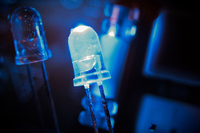

Electricieni
Un electrician este un profesionist (meseriaș) pregătit pentru domeniul instalațiilor și utilajelor electrice. El devine competent prin pregătire profesională pentru construcția, instalarea, întreținerea, modificarea și repararea acestora fie că ele există în interiorul clădirilor sau sunt în exterior. În activitatea de electrician, trebuie respectate o serie de norme tehnice specifice, de standarde. Asta este verificat de factori autorizați competenți. Electricienii pot să lucreze pentru a monta în faza inițială un sistem electric, o instalație electrică, sau ulterior pentru întreținerea (mentenanța) acestora.
Domenii de activitate
Un electrician este un meseriaș ce poate și să întemeieze o firmă electrică proprie, caz în care necesită autorizare de la instituția specializată în autorizări de acest gen, sau poate fi angajat al unei unei firme, companii de electricitate specializată în servicii electrice.
În general locul de exercitare a profesiei de electrician este în:
- Firmă (companie) de servicii electrice (instalații și/sau utilaje, aparate), în domeniul instalării și/sau întreținerii (conservării)
- Întreprindere (firmă) de producție (industrială, economică etc.)
- Întreprindere (companie) de furnizare și distribuție de energie electrică
- Firmă (companie) comercială cu profil tehnic electric
Competențe și capabilități
Electricienii trebuie să dispune de capacități profesionale care să le faciliteze:
- Montare de instalații și rețele electrice conform documentațiilor tehnice
- Instalare și punere în stare de funcționare a aparatelor electrice
- Efectuare de întreținere și reparații la instalații automatizate
- Executare de modificări și recondiționări tehnice la instalații electrice
- Executare de măsurători electrice după instalări și/sau reparații aparatelor și instalațiilor electrice, cât și apreciere a stării lor tehnice
Tendință profesională
Datorită creșterii complexității în câmpul de activitate, prin elemente de tehnologie ridicată, se constată (negeneralizat) includerea în domeniul competenței de electrician a unor elemente de tehnică electronică. De asemenea, unele activități din domeniul tehnicilor de telecomunicații, pot fi incluse în câmpul de competență profesională a electricienilor, bineînțeles printr-o adecvată instruire. Totuși, rămâne o deosebire clară în ceea ce privește programele de instruire a electricienilor și electroniștilor, și consecvent între competențele lor profesionale ulterioare.
Obiecte ale profesiei
Concret, electricienii instalează, întrețin, (mențin în stare de funcționare) instalații și aparate electrice. De asemenea ei instalează, întrețin (conservă) și repară aparate electrice și mijloace de funcționare electrică cum ar fi:
- Aparate și elemente de conectare și comutare electrică
- Prize electrice de contact și prize electrice de legături
- Corpuri de iluminat electrice, lămpi electrice
- Aparatură de uz casnic
Unelte (scule) necesare
Pentru efectuarea lucrărilor la și pentru instalații și mașini electrice, electricienii folosesc scule adecvate scopului și împrejurărilor, care contribuie la asigurarea calității lucrărilor și (unele dintre ele) la protecția tehnicianului:
- Clești diferiți: clește universal (patent), clește de tăiat lateral, clește cu vârf (ascuțit), clește de dezizolare
- Șurubelnițe de diferite mărimi și forme ale capului activ; șurubelnițe izolante
- Ciocan de lipit conductori
- Freză de perete (zid), mașină de găurit portabilă
- (Instrument) Aparat de măsurare a tensiunilor, curenților, rezistențelor electrice (Ohmmetru). Acesta trebuie verificat periodic.
Uneltele electricianului trebuie folosite doar pentru lucrările adecvate, care nu le suprasolicită și deci nu le afectează negativ calitățile specifice.
Sus-Înapoi
Curenți slabi, curenți tari, înalte tensiuni

Câmpul de activitate al electricienilor cuprinde de obicei domeniul curenți slabi și curenți tari. Pentru domeniul tensiunilor înalte este necesară autorizare și instruire specială adecvată. Cele trei domenii de curenți (lucru) se caracterizează specific astfel:
- Instalații electrice de curenți slabi: unde tensiunea de lucru nu este (de regulă) mai mare de 24 V
- Instalații electrice de curenți tari: unde tensiunea electrică nominală este mai mare decât 24 V, dar nu depășește limita de 1.000 V
- Instalații și rețele de înaltă tensiune sunt cele cu tensiune electrică mai mare de 1.000 V.
Electricitate:
Electricitatea este un set de fenomene fizice asociate cu prezența și deplasarea sarcinilor electrice. Energia electrică produce o mare varietate de efecte bine-cunoscute, cum ar fi: fulgerul, electricitatea statică, inducția electromagnetică și curentul electric. În plus, energia electrică permite crearea și absorbția de radiații electromagnetice, cum ar fi undele radio. În domeniul energiei electrice, sarcina produce câmpuri electromagnetice care acționează asupra altor sarcini. Energia electrică apare ca urmare a mai multor tipuri de fizică:
- sarcină electrică: o proprietate a unor particule subatomice, care determină interacțiunile lor electromagnetice. Materia încărcată electric produce și este influențată de câmpuri electromagnetice; sarcinile electrice pot fi pozitive sau negative;
- curentul electric: o mișcare sau flux de particule încărcate electric, măsurat, de obicei, în amperi; câmp electric (a se vedea electrostatică): un tip special, simplu de câmp electromagnetic produs de o sarcină electrică, chiar atunci când nu este în mișcare (de exemplu, nu există curent electric). Câmpul electric exercită o forță asupra altor sarcini din vecinătatea sa. Sarcinile care se deplasează produc, în plus, un câmp magnetic;
- potențialul electric: capacitatea unui câmp electric de a face lucru mecanic pe o sarcină electrică, de obicei, măsurată în volți;
- electromagneți: curenții electrici generează câmpuri magnetice, iar variația câmpurilor magnetice generează curent electric.
Sarcina electrică
Prezența sarcinii electrice dă naștere la o forță electrostatică: sarcinile electrice exercită o forță una asupra celeilalte, efect care a fost cunoscut, dar nu și înțeles, în antichitate. O bilă ușoară suspendată de un fir poate fi încărcată electric prin atingerea cu o baghetă de sticlă care la rândul ei fusese electrizată prin frecare cu o cârpă. Dacă o bilă similară este electrizată de aceeași baghetă de sticlă, se observă că o respinge pe prima: sarcina electrică acționează pentru a împinge cele două bile fiecare în sens opus celeilalte. La fel, și două bile electrizate cu o tijă de chihlimbar electrizată prin frecare se resping reciproc. Cu toate acestea, dacă o bilă este electrizată cu bagheta de sticlă, iar cealaltă cu tija de chihlimbar, se observă că cele două bile se atrag reciproc.
Forța acționează chiar asupra particulelor încărcate, prin urmare sarcina are tendința de a se răspândi cât mai uniform posibil pe o suprafață conductoare. Modulul forței electromagnetice, fie de atracție, fie de respingere, este dat de legea lui Coulomb, care face legătura între forță și produsul sarcinilor și are o proporționalitate invers-pătratică cu distanța dintre ele.
Curentul electric

Mişcarea sarcinii electrice este cunoscută drept curent electric, intensitatea acestuia fiind de obicei măsurată în amperi. Curentul poate consta din orice particule încărcate aflate în mişcare; cel mai frecvent, acestea sunt electronii, dar orice sarcină în mişcare constituie curent.
Printr-o convenţie istorică, un curent pozitiv este definit ca având aceeaşi direcţie de curgere ca sarcinile pozitive pe care le conţine, sau că curge dinspre partea cea mai pozitivă dintr-un circuit spre cea mai negativă. Curentul definit în acest mod este numit curent convenţional. Mişcarea electronilor încărcaţi negativ în jurul unui circuit electric, una dintre cele mai cunoscute forme de curent, este astfel considerată pozitivă în sens opus mişcării electronilor. Cu toate acestea, în funcţie de condiţii, un curent electric poate consta dintr-un flux de particule încărcate în orice direcţie, sau chiar în ambele direcţii simultan. Convenţia pozitiv-negativ este utilizată pe scară largă pentru a simplifica această situaţie.
Procesul prin care trece curentul electric printr-un material se numeşte conducţie electrică, şi natura acesteia variază în funcţie de particule şi materialul prin care se deplasează ele. Exemple de curenţi electrici sunt conducţia metalică, unde electronii se deplasează printr-un conductor(d), cum ar fi metalul, şi electroliza, unde ioni (atomi cu sarcină electrică) curg prin lichide, sau prin plasme cum ar fi scânteile electrice.
Un câmp electric este creat de un corp încărcat electric, în spațiul care-l înconjoară, și are ca rezultat o forță exercitată asupra oricărei alte sarcini introduse în câmp. Câmpul electric acționează între două sarcini într-un mod similar cu modul în care câmpul gravitațional acționează între două mase, și se extinde, astfel, spre infinit, prezentând o proporționalitate invers-pătratică cu distanța. Cu toate acestea, există o diferență importantă. Gravitația acționează întotdeauna în sensul atracției, atrăgând două mase una spre cealaltă, în timp ce câmpul electric poate duce fie la atracție, fie la respingere. Deoarece corpurile mari, cum ar fi planetele, nu poartă, în general, o sarcină netă, câmpul electric la distanță este de obicei zero. Astfel, gravitația este forța dominantă la distanță în univers, deși este mult mai slabă.
Studiul câmpurilor electrice create de sarcini staționare poartă numele de electrostatică. Câmpul poate fi vizualizat printr-un set de linii imaginare ale căror direcție în orice punct este cea a câmpului. Acest concept a fost introdus de către Faraday,[38] al căror termen „linii de forță(d)” încă mai este uneori utilizat. Liniile de câmp sunt traiectoriile pe care o sarcină pozitivă punctiformă le-ar urma în timp ce ar fi forțată să se deplaseze prin câmp; ele sunt însă un concept imaginar, fără existență fizică, și câmpul pătrunde prin tot spațiul dintre linii.[38] Liniile de câmp care provin din sarcini staționare au mai multe proprietăți-cheie: în primul rând, ele provin de la sarcini pozitive și se termină în sarcini negative; în al doilea rând, acestea trebuie să pătrundă în orice bun conductor în unghi drept, și în al treilea rând, ele nu pot traversa și nici nu se pot termina în ele însele.
Sus-Înapoi
Mai multe informatii, pe pagina oficiala / (Sursa: Wikipedia.org)